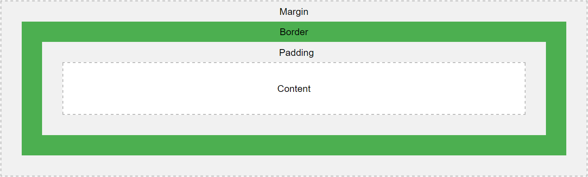

Na froncie
part 1
HTML, CSS

npm, github
Agenda
- Wstęp
- Edytory
- Elementy
- CSS
Wstęp
- Czym jest HTML
- Dokument HTML
- Tagi
- Wersje HTML
Czym jest HTML
Podstawowy język znaczników do tworzenia stron internetowych
- HTML - HyperText Markup Language
- Opisuje strukturę strony
- Każdy z elementów HTML reprezentowany jest przez tag
- Elementy HTML są klockami z których składa się strona
Dokument HTML
Tak wygląda przykładowy dokument HTML
<!DOCTYPE html>
<html>
<head>
<title>Page Title</title>
</head>
<body>
<h1>My First Heading</h1>
<p>My first paragraph.</p>
</body>
</html>
Tagi
Tag składa się z nazwy elementu zamkniętego pomiędzy ostrymi nawiasami
<tag>zawartość</tag>
- Tagi zazwyczaj występują w parach np.: <p>...</p>
- Pierwszy w parze nazywa sie tagiem otwierającym a drugi zamykającym
- Tag zamykający ma / przed nazwą
- Występują też tagi bez tagów zamykających np.: <br/>
Wersje HTML
| Version | Year |
|---|---|
| HTML | 1991 |
| HTML 2.0 | 1995 |
| HTML 3.2 | 1997 |
| HTML 4.01 | 1999 |
| XHTML | 2000 |
| HTML5 | 2014 |
Edytory
- Sublime Text
- PhpStorm
- Visual Studio
Sublime Text
Kiedyś bardzo popularny na froncie. Wygodny i z pluginami może wszystko.

PhpStorm
Teraz cały dział przechodzi na PhpStorma.
- Wydajniejszy
- Lepsze wsparcie dla sftp
- Zaczął być prawie tak samo wygodny
- Uruchamia się mniejwięcej tak samo szybko
Visual Studio
Elementy
head h1 h2 h3 h4 h5 h6 p b strong i u em small mark del ins sub sup q blockquote abbr address cite a img table tr th td ul ol li dl dt dd div section article aside header footer nav menuitem details dialog main progress summary time form fieldset legend label select textarea button input
Inne elementy
- audio
- video
- canvas
- svg
Audio
<!DOCTYPE html>
<html>
<body>
<audio controls>
<source src="../media/horse.ogg" type="audio/ogg">
<source src="../media/horse.mp3" type="audio/mpeg">
Your browser does not support the audio element.
</audio>
</body>
</html>
Video
<!DOCTYPE html>
<html>
<body>
<video width="400" controls>
<source src="mov_bbb.mp4" type="video/mp4">
<source src="mov_bbb.ogg" type="video/ogg">
Your browser does not support HTML5 video.
</video>
<p>
Video courtesy of
<a href="http://www.bigbuckbunny.org/" target="_blank">Big Buck Bunny</a>.
</p>
</body>
</html>
Canvas
<!DOCTYPE html>
<html>
<head>
<meta charset="utf-8"/>
<script type="application/javascript">
function draw() {
var canvas = document.getElementById("canvas");
if (canvas.getContext) {
var ctx = canvas.getContext("2d");
ctx.fillStyle = "rgb(200,0,0)";
ctx.fillRect (10, 10, 50, 50);
ctx.fillStyle = "rgba(0, 0, 200, 0.5)";
ctx.fillRect (30, 30, 50, 50);
}
}
</script>
</head>
<body onload="draw();">
<canvas id="canvas" width="150" height="150"></canvas>
</body>
</html>
SVG
<!DOCTYPE html>
<html>
<body>
<h1>My first SVG</h1>
<svg width="100" height="100">
<circle cx="50" cy="50" r="40" stroke="green" stroke-width="4" fill="yellow" />
Sorry, your browser does not support inline SVG.
</svg>
</body>
</html>
CSS
- Stylowanie
- Selektory
- Box Model
- Pozycjonowanie
Stylowanie
Atrybut Style
<div style="background: red;"></div>
Stylowanie
Tag style w head
<!DOCTYPE html>
<html>
<head>
<style>
a:link {
color: green;
background-color: transparent;
text-decoration: none;
}
a:visited {
color: pink;
background-color: transparent;
text-decoration: none;
}
a:hover {
color: red;
background-color: transparent;
text-decoration: underline;
}
a:active {
color: yellow;
background-color: transparent;
text-decoration: underline;
}
</style>
</head>
<body>
<p>You can change the default colors of links</p>
<a href="html_images.asp" target="_blank">HTML Images</a>
</body>
</html>
Stylowanie
Plik CSS
<link rel="stylesheet" href="css/reveal.css">Selektory
Nazwa tagu
h1 {
background: white;
}
Selektory
Nazwa klasy
.menu {
background: white;
}
Selektory
Id elemenut
#element-1 {
background: white;
}
Selektory
Po spacji
.menu .button {
background: red;
}
Selektory
Bezpośrednie dziecko
.menu > .button {
background: red;
}
Selektory
Następny element
.menu + .menu-two {
background: red;
}
Selektory
Po przecinku
.menu1, .menu2 {
background: red;
}
Box Model
Box Model
Elementy block: h1 h2 h3 h4 h5 h6 p blockquote address ul ol dl div section article aside header footer nav details dialog main summary form fieldset legend
Elementy inline: b strong i u em small mark del ins sub sup q abbr cite a menuitem time label
Elementy inline-block: img progress select textarea button input
Pozycjonowanie
position: staticposition: relativeposition: fixedposition: absolute